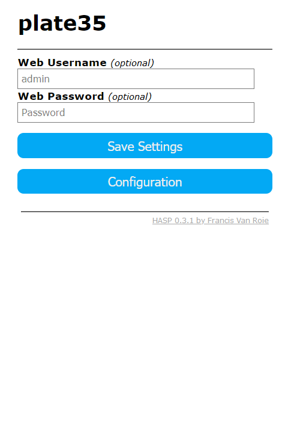

HTTP Settings~
To restrict access to the web user interface you can set a Username and Password.
Web UI~

Click 'Save Settings' to activate immediately. If the username and/or password have been changed you need to enter the new values.
Note
Please note that all http communication is unencrypted and that this is only a simple security measure